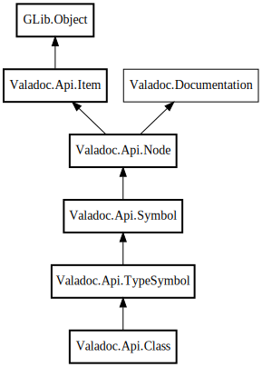

Class
Object Hierarchy:

Description:
public class Class :
TypeSymbol
Represents a class declaration.
Content:
Properties:
Creation methods:
Methods:
Fields:
Inherited Members:
All known members inherited from class Valadoc.Api.TypeSymbol
All known members inherited from class Valadoc.Api.Symbol
All known members inherited from class Valadoc.Api.Node
All known members inherited from class Valadoc.Api.Item
All known members inherited from class GLib.Object
All known members inherited from interface Valadoc.Documentation